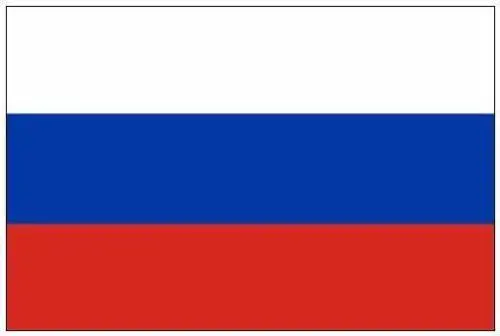

.jpg)

Total carbon emissions
2020-1.7 billion tons
Russia expanded its industrial production on a large scale from 1999 to 2005, so its annual carbon dioxide emissions soared to 1.7 billion tons, ranking third. Russian President Dmitry Medvedev has promised that by 2020, Russia's greenhouse gas emissions will be reduced by 20% to 25% from 1990.
Analysis
In recent years, Russia's economy has developed rapidly. In 2010, Russia's GDP was US $1.48 trillion, a year-on-year increase of 3.8%; The per capita GDP is US $1035200, which has reached the income level of middle-class countries. The rapid
development of Russia's economy is inseparable from the extensive use of energy. In 2007, the energy consumption of Russia's $10000 GDP was 16.5 tons of standard oil, 5.61 times the world average.
By constructing Russia's carbon emission welfare performance index and analyzing the changes of Russia's carbon emission welfare performance by logarithmic mean Diehl decomposition (LMDI), the results show that Russia's carbon emission
welfare performance and change value show a downward trend, mainly because the economic welfare performance is declining year by year, and the economic growth has not brought about the improvement of life expectancy, education and
people's living standards. Although Russia's carbon productivity has an upward trend, it is still backward compared with other developed countries, and there is a hidden danger of decline in Russia's carbon productivity under the carbon
locking effect. The main ways to improve carbon emission welfare performance are to improve economic welfare performance and use green finance to remove the carbon locking effect from the micro, meso and macro levels.
prevention
Russia will establish a carbon trading system to achieve carbon neutrality by 2025. Abramchenko said that Sakhalin Island will be taken as a sample to conduct carbon emission and carbon absorption mapping, establish necessary infrastructure
to support climate projects, form a regional carbon emission trading mechanism and integrate with the international trading system. In the next step, carbon quota export can be promoted. If the pilot is successful, it will be extended
to other regions.